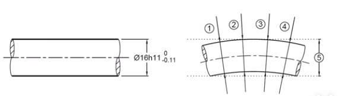
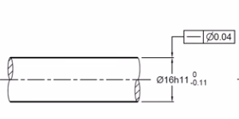
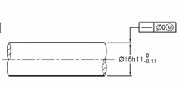

公差和形位公差
独立原则
包容原则
ISO标准
ISO GPS（Geometrical Product Specifications）
独立原则：
如图尺寸标注，你只保证轴的每段截面都满足即可，即1、2、3、4位置满足，但5超差不管。
因此，你还需要添加【形位公差】来约束尺寸在整体的要求（如图）
ASME标准
ASME GD&T（Geometric Dimensioning & Tolerancing）
包容原则：
默认包容原则，要求零件所有元素不得超越最大实体边界(即最大轴径)，并且每个局部截面的尺寸不得超出最小实体尺寸(即最小轴径)。可以通过“Ⓘ”来实现独立原则
- 轴做到最大尺寸时轴为完美形状
- 孔做到最小尺寸时孔为完美形状
- 孔轴都有尺寸余量时可以有变形，但不能超过尺寸极限
（补充一句：国标里的包容原则在尺寸公差旁加“Ⓔ”表示）
最小实体原则
最大实体原则
公差在这两原则下，是一个随基础尺寸变化的动态公差。可以通过线性图表表示：
